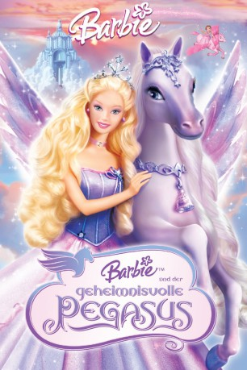

#660 Barbie 05 und der geheimnisvolle Pegasus
Alternativ: Barbie and the Magic of Pegasus 3-D
 
 IMDB-Wertung: 6.4 / 10
IMDB-Wertung: 6.4 / 10  Metascore: 0
Metascore: 0 
Bei einem nächtlichen Eislaufausflug wird die hübscheste Prinzessin im ganzen Land von einem bösartigen Lord, der auf einem Drachen einherschwebt, überrascht. Als sie seinen Heiratsantrag ablehnt, verwandelt er ihre Eltern in Stein. Gemeinsam mit ihrer Schwester, die der Lord vor Jahren in ein fliegendes Pferd verwandelt hatte, beschließt sie ihre Eltern allen Gefahren zum Trotz zu retten.
Jahr: 2005
Dauer: 83 Minuten
FSK:
Land: USA Studio: Lions Gate Films Home EntertainmentTonspuren:
Untertitel:
Auflösung: SD (576x320) Größe: 697 MB
Genre: Animation/Trick, Familie, Liebe
Regisseur: Greg Richardson
Drehbuch: Elana Lesser, Cliff Ruby
Soundtrack: Arnie Roth
Darsteller:
Datei: X:\Kinder Collections\Barbie\Barbie 05 und der geheimnisvolle Pegasus (2005, FSK, 576x320).avi seit 12.03.2015
Festplatte: Kinder-Filme+Trick
 Es gibt insgesamt 40 Filme in der Gruppe 'Kinder Collections\Barbie'
Es gibt insgesamt 40 Filme in der Gruppe 'Kinder Collections\Barbie'